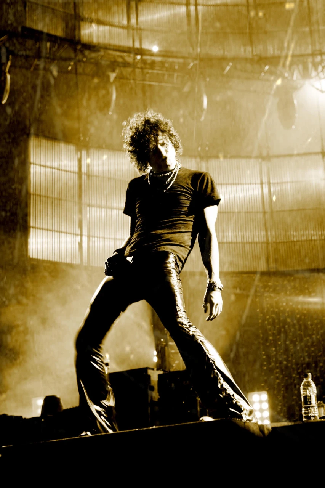

HEROES DEL SILENCIO
INTRO
Between 1987 and 1995, Spain's Heroes del Silencio were the very definition of Spanish rock. Fronted by the enigmatic singer/songwriter Enrique Bunbury, their sound was defined by the inventive guitar playing of Juan Valdivia, bassist Joaquin Cardiel, and virtuoso drummer Pedro Andreu. Their music evolved from an atmospheric, complex meld of post-punk, Gothic, Celtic, and folkloric Spanish influences (including flamenco) during their earliest years to post-punk, riff-heavy hard rock later on. Their first EP, 1987's Héroe de Leyenda, sold more than 30,000 copies. Their 1988 debut album, El Mar No Cesa, was certified platinum a week after its release. The band toured Europe and the Americas relentlessly. They enlisted Roxy Music's  Phil Manzanera as producer for 1990's Senderos de Traición and 1993's El Espíritu del Vino -- both went multi-platinum and topped the charts. In the aftermath, touring rhythm guitarist Alan Boguslavsky joined the lineup as a full-time member. Avalancha, their final studio outing, was cut in Los Angeles with producer Bob Ezrin and showcased a much more riff-centric, metallic sound, and fans ate it up. They split in 1996 but reunited for a ten-show tour in 2007 resulting in a live album. In 2021, Netflix aired director Alexis Morante's documentary film Heroes: Silencio y Rock and Roll with participation from the original quartet and others.